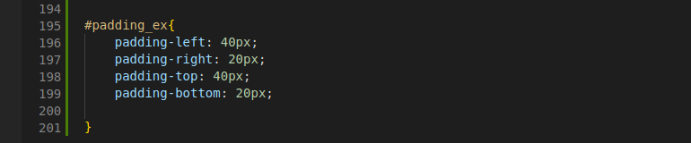

O que é CSS?
Como dito previamente, CSS significa Cascading Style Sheets (Folhas de Estilo em Cascata, em português) e é uma linguagem de estilo utilizada para controlar a aparência e o layout de páginas da web.
Ao pensarmos em um site como uma construção física, como um prédio, ou uma casa, por exemplo, se pode pensar no HTML como a estrutura "vazia", a fundação da obra, enquanto o CSS seria a decoração, ou um jeito de transformar aquela fundação em algo mais agradável e intuitivo.
Existem três maneiras para estilizar um elemento HTML com propriedades do CSS.
- 1. Inline CSS
- 2. Internal CSS
- 3. External CSS
Imaginemos o seguinte cenário, é desejado trocar a cor e a fonte do elemento "h2", com a maneira "inline". Esta mudança, como o nome sugere, ocorreria na linha do elemento, como podemos observar na imagem abaixo:

O Internal CSS, também como o nome sugere, aplica o CSS de maneira interna ao documento HTML, para isso se cria no cabeçalho, um bloco de "comandos" CSS, que necessitam estar rodeados pela tag "style", que possui a estilização desejada. Veja melhor com um exemplo do cenário anterior, porém com o internal CSS.
O mais indicado, no entanto, principalmente para projetos grandes, é o external CSS. Onde se cria um arquivo css no próprio projeto, que irá conter as estilizações desejadas nos documentos html. Para isso além da criação deste documento, é necessário referênciar o mesmo, nos arquivos HTML que o usarão. Seguem as fotos do arquivo e da referência, consecutivamente.


Some CSS components
Fonts e colors
Para mudar a fonte de determinado elemento, alteramos a propriedade "font-family" e passamos a fonte desejada. Outras propriedades interessantes são o tamanho da fonte, que pode ser alterado com "font-size" e seu estilo, que pode ser alterado com "font-style".
Para mudar a cor é mais símples, alteramos a propriedade "color", passando como parâmetro uma cor por nome, valor rgb, ou hexadecimal.
Alteremos por exemplo a frase "Frase teste" com a seguinte estilização:
Frase teste
Borders
Os elementos html possuem como opção padrão de borda, a opção "none". Para modificá-la, alteramos a prorpiedade "border-style". Outras coisas que podemos fazer com a borda, são: mudar sua curvatura, sua espessura e sua distância relativa ao conteúdo, por exemplo. Observemos a seguinte estrofe criada pelo chatGPT à respeito do CSS com as seguintes configurações de borda:

No mundo virtual, o CSS é o herói,
Com estilos e cores, ele dá brilho,
Das margens ao posicionamento,
Deixa o layout com encantamento.
Background
Quanto ao "fundo"/background, nós também conseguimos alterar algumas de suas propriedades, como sua cor, seu tamanho e posição, por exemplo.
Alteremos a mesma estrofe anterior, porém com essas configurações de background:
No mundo virtual, o CSS é o herói,
Com estilos e cores, ele dá brilho,
Das margens ao posicionamento,
Deixa o layout com encantamento.
Padding
A propriedade "Padding" já foi demonstrada previamente ao se falar de borders e background, mas sobre o que exatamente é responsável?
Bom, a propriedade "padding" diz respeito à distância de uma propriedade ao elemento, or exemplo, a distância entre a borda e o texto, ou entre o background e o texto. Podemos alterar todas as distâncias. Observe a mesma estrofe com estas configurações de padding em seu background.
 No mundo virtual, o CSS é o herói,
Com estilos e cores, ele dá brilho,
Das margens ao posicionamento,
Deixa o layout com encantamento.
Margin
A propriedade "Margin" é responsável por determinar a distância ao redor de um elemento. Muito cuidado para não confundí-la com "padding", já que esta diz respeito à distância entre a borda e o elemento. Assim como a padding, podemos mudar todas as direções da Margin
Observe a mesma estrofe com estas configurações de Margin em seu background (Preste atenção nas distâncias entre a estrofe e a imagem, tal qual aos limites da tela e ao rodapé).
No mundo virtual, o CSS é o herói,
Com estilos e cores, ele dá brilho,
Das margens ao posicionamento,
Deixa o layout com encantamento.